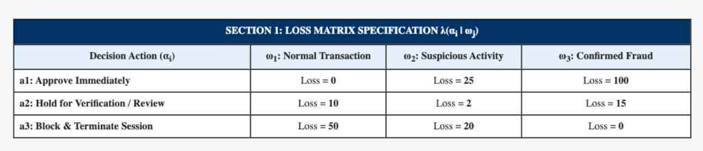
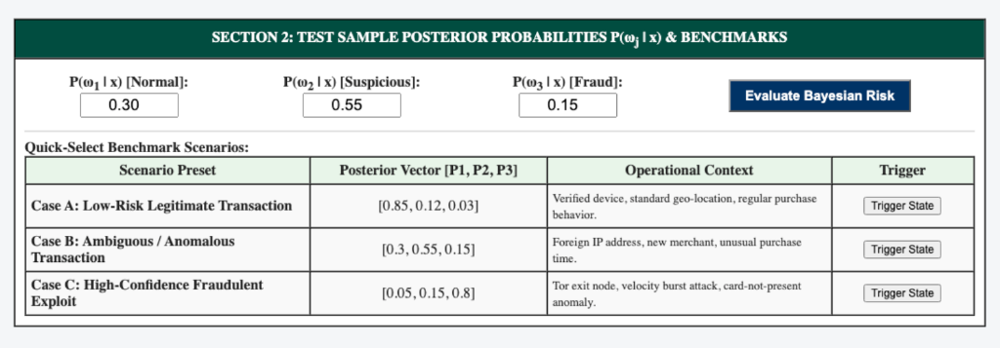
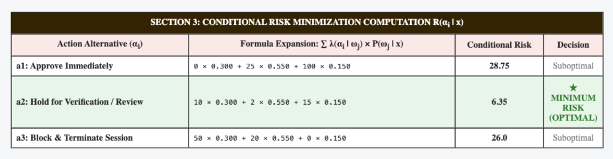
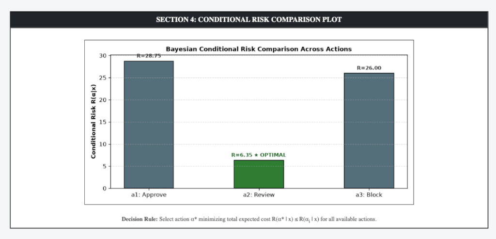

Practical File Submission — Academic Session
Bayesian Risk Minimization for Three Classes and Three Actions Using Flask
To prepare an interactive web application using Flask in Python to implement Bayesian Risk Minimization for at least three classes and three actions, evaluate the conditional risk given an arbitrary loss matrix, and trigger and dynamically reflect optimal action consequences on the page.
Real-world classification tasks frequently encounter asymmetric consequences across error modalities. Bayesian Risk Minimization incorporates a formal Loss Matrix $\Lambda = [\lambda(\alpha_i | \omega_j)]$ measuring the quantifiable penalty of electing action $\alpha_i$ when the true underlying state of nature is $\omega_j$.
Constructed exp 6/ directory with Flask web server and NumPy mathematical risk calculation routines.
Constructed 3-class, 3-action loss matrix and mapped decisions to operational web triggers (Automated Clearance, 2FA Escrow, and Security Shield Lockdown).
Launched server at http://127.0.0.1:5008 with interactive posterior sliders, benchmark presets, and risk visualization plot.
Displays the asymmetric penalty parameters λ(α_i | ω_j) across the 3 decision actions and 3 states of nature.

Interactive inputs for posterior probabilities alongside pre-configured operational benchmark test cases.

Mathematical expansion calculating expected loss R(α_i | x) for each candidate action to determine the optimal decision.

Bar chart visualizing the risk values across available actions, highlighting the minimum-risk choice.

GitHub Repository (Clickable):
Direct Source Code Files:
In this experiment, a Bayesian Risk Minimization engine was developed and deployed using Flask in Python. Given an asymmetric loss matrix across three classes and three decision actions, conditional risks were dynamically computed from input posterior probabilities. The system verified that selecting actions based on minimal expected loss $\alpha^* = \arg\min R(\alpha_i | \mathbf{x})$ successfully triggered corresponding operational workflows (automated clearance, step-up verification, and security lockout), all reflected visually in real time on the web dashboard.